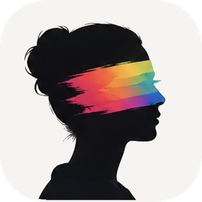
Develop your RAW files on your own Mac.
Rebrilo is a photo editor for macOS: the tone and colour controls you expect, local masks that find the sky or the person for you, and the merges that usually mean leaving for another program — panorama, HDR, long exposure, the best faces from a burst.
Your folders stay where they are. Nothing is copied, nothing is uploaded, and there is no Rebrilo account to make.
macOS 26 or later · Apple silicon

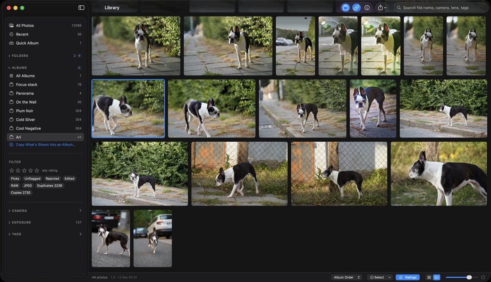
Two layouts, because culling and looking are two jobs — On the left the grid: file names, stars, a series pushed open, and the panel on the right reading the camera, the lens and 1/320 at f/1.8 straight out of the file. On the right the same photographs with nothing on top of them. Nothing is imported either way — your folders are read where they lie.


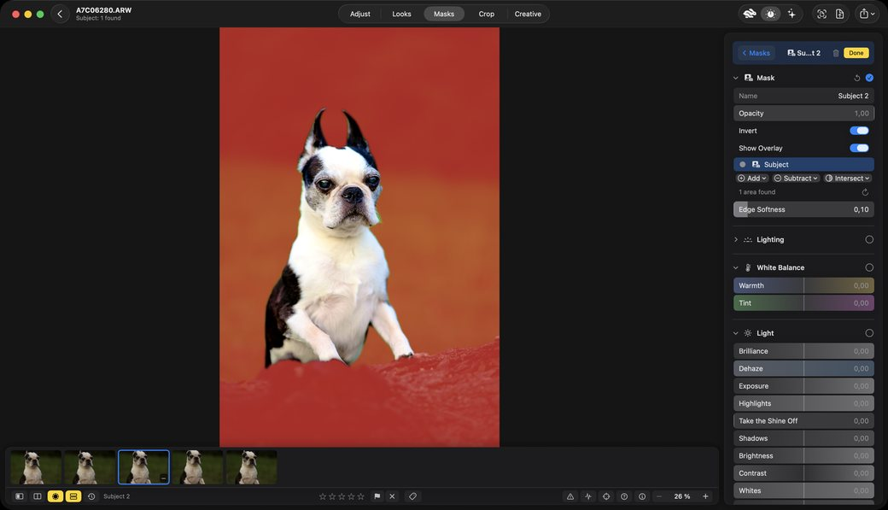
A mask that finds the subject — and one switch to turn it round — Red is the mask, and nobody drew it: the dog was found on the Mac itself, offline, and the panel reports one area. Invert makes the region everything except the dog. The region has not changed; what changed is which side of it an edit lands on.
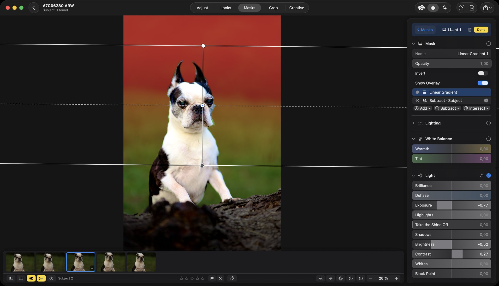
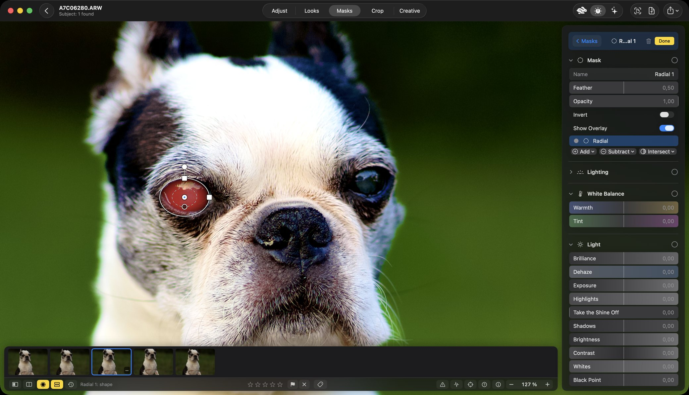

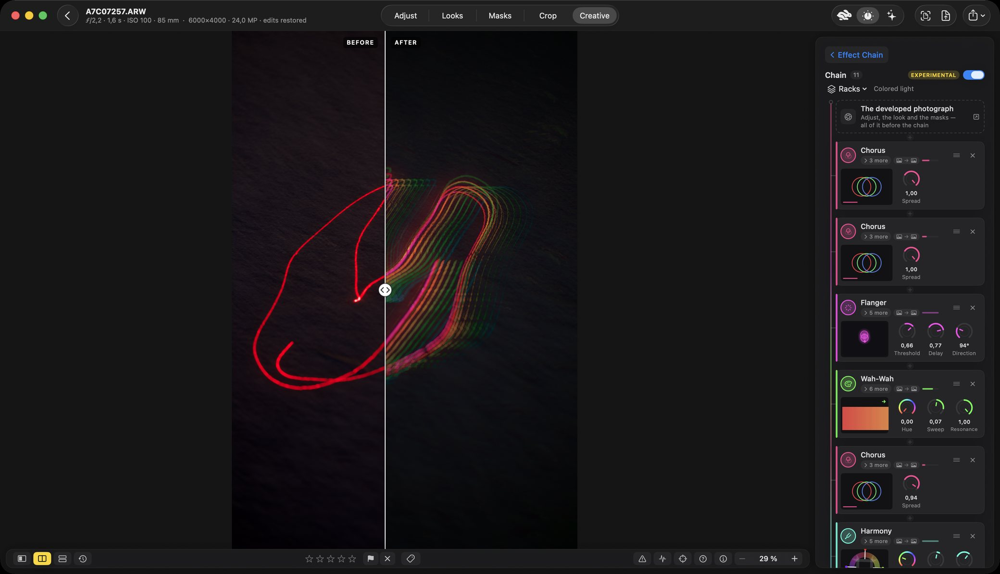
Screenshots, not mock-ups — the application as it stands, on a real catalogue with the duplicates and the copies still in it. Mostly the same dog: a mask is easier to follow on a subject you have already seen.
Light the person, after the shutter
An ordinary snapshot by a shop window, lit afterwards in the Portrait Studio: a key, a fill, a rim and the wall, set on a plan of the room rather than with sliders. The person is found on the Mac itself.


In the photographs: Natálie Havlová — Content creator · @natalkainholland
What it does
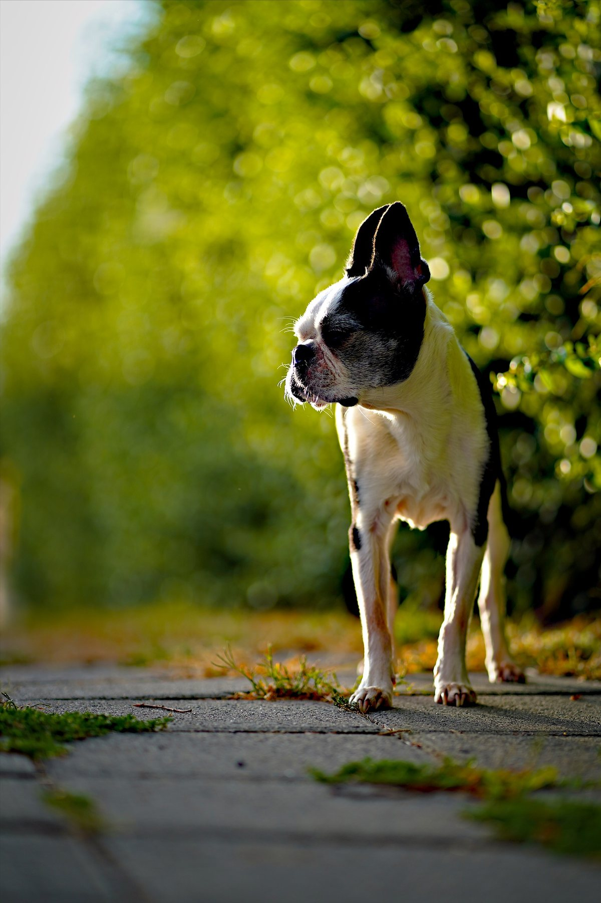
A beginner should get somewhere good with one press. Somebody who knows what they are doing should be able to take that press apart and do it properly. Every automatic step here shows its working, and every one of them can be overruled.
The whole tone stack, on RAW
Exposure, highlights and shadows, curves, colour grading wheels, selective colour, clarity, texture, dehaze, grain, vignette. Every tone slider goes one way for its whole travel — there is a test that fails if one ever turns back.
Local edits, and the region found for you
Radial, linear and brush masks, plus sky, subject and people found by the Mac itself. Combine them with add, subtract and intersect. Each mask carries its own tone, colour and light.
188 looks, and a way to make your own
Grouped on shelves, with an Amount slider under every one. Some read the photograph before they style it. Point at a picture you admire and Rebrilo writes its mood into your sliders.
The merges, without leaving
Panorama, HDR, exposure fusion, hand-held burst, long exposure, light trails, removing passers-by, an action sequence, and the best face of each person on one frame — started from a series or a selection, right there in the library.
Measured at a hundred thousand photographs
Folders referenced in place, ratings and flags, albums, automatic series, duplicates, RAW + JPEG pairs, and a grid that stays quick because it was measured rather than assumed.
A list of the app's own verbs, saved and run again
Cull a shoot, rate what is left, put one look over it, collect it into an album. It measures first and tells you exactly what it will do — this will flag 380 and rate 42 — and only writes after a second press. The whole run is one undo.
Why doesn't my RAW look like the camera's picture?
Camera Match fits a colour profile from the RAW's own embedded preview — the same scene, the same second, the camera's own rendering — so a file opens near where the camera left it instead of somewhere neutral.
A recipe, not a dialog you redo every time
Format, colour space, resize, output sharpening, metadata rules and a watermark, saved as a preset and applied to a whole selection.
Works with Shortcuts
Open, auto-enhance, apply a look, adjust and export are actions you can drop into a shortcut of your own — and the same actions are what Spotlight indexes, so they can be run by name.
A look for every kind of photograph
188 looks, on shelves by what they are for — everyday, light and airy, dark and moody, portrait, cinematic, vintage, black and white — each with an Amount slider, and the smart ones measure the photograph before they style it. A few of them, on one frame from a studio session with Luknar.
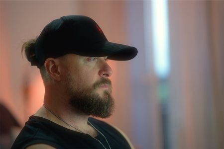
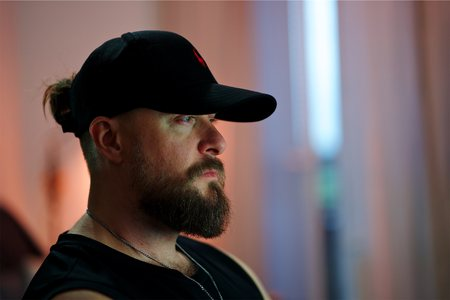
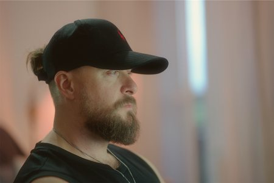
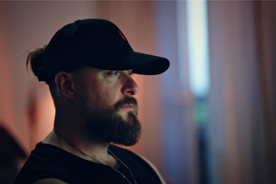
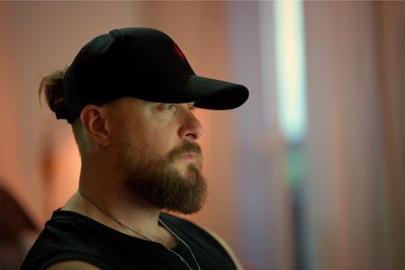
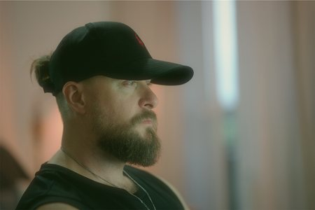
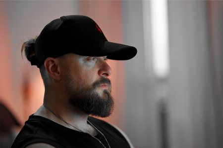
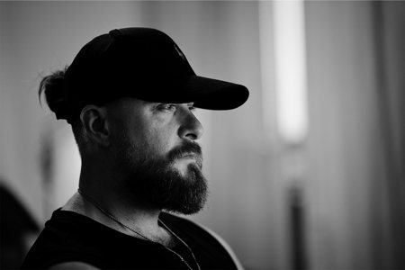
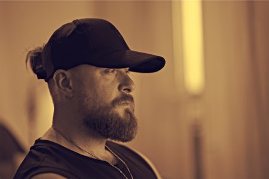
In the photographs: Luknar — Czech artist & musician · luknar.cz
Your whole album, in the look you want
Pick an album, pick the look — or several — and run one workflow. Rebrilo corrects every photograph for itself and then puts the look over all of them, or makes the album again in each look you chose, every version a copy in an album of its own and the originals left as they are. Eighteen frames from one studio session with Luknar, four ways:
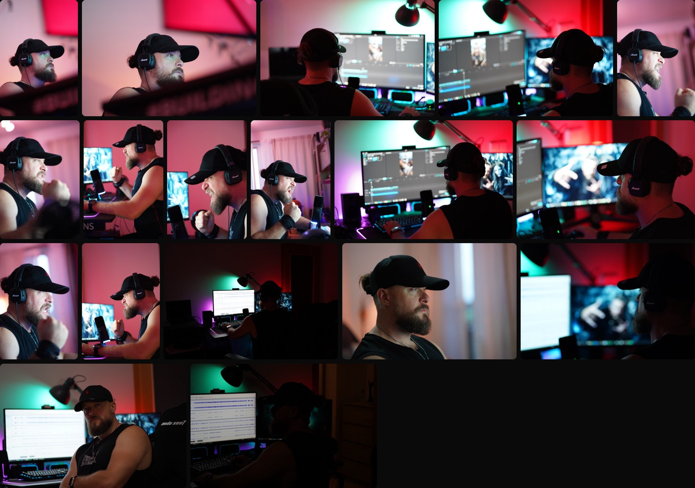
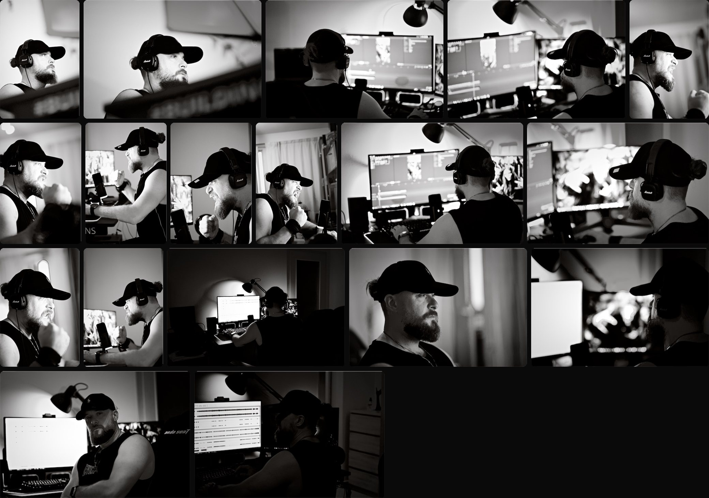
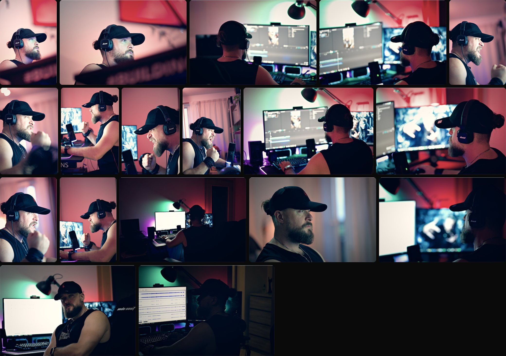
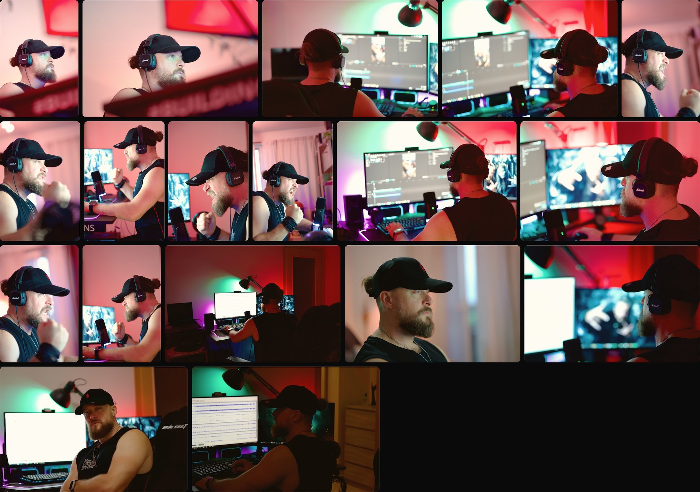
The camera’s own pictures: eighteen frames from one session, as they came off the card.
The same eighteen in black and white, the blacks deep and the light on the face kept.
The same eighteen with the colour held back, contrast in and a little fade — one grade over the whole set.
The same eighteen lifted and opened up: soft shadows, clean highlights.
In the photographs: Luknar — Czech artist & musician · luknar.cz

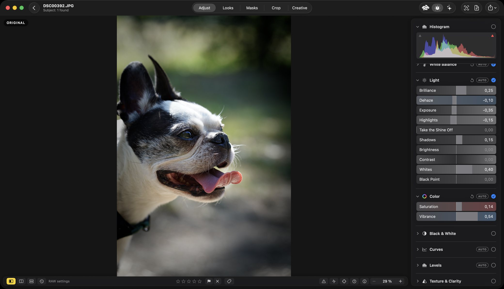
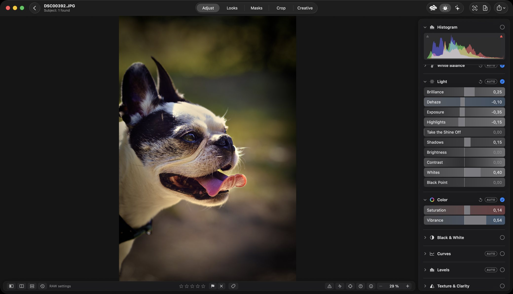
iPad and iPhone are coming — and you will not buy it twice
Rebrilo is being built for iPad and iPhone as well. When it arrives it is the same purchase: one App Store record across every platform, bought once, the way Apple's Universal Purchase works. Somebody who buys the Mac editor is not asked to buy it again for their iPad.
Your photographs stay yours
This is not a policy written after the fact. It is how the application is built, and it is checkable: Rebrilo ships with no network entitlement at all.
Nothing is uploaded
Your photographs never leave your Mac. There is no server, because there is nothing to send to one.
Nothing is copied
Folders are referenced where they already are. Your originals are never moved, rewritten or imported into a vault.
No Rebrilo account
No sign-up, no email address, no login of ours. The trial and the purchase go through the App Store, with the Apple Account you already have.
Nothing is deleted behind your back
Edits are kept beside the catalogue and never written into your files. Removing a photograph from the library leaves the file untouched.
Let’s make the best editor on the Mac
That is the goal, and it is not ours alone. Everyone who uses Rebrilo and writes in about it is part of how it gets better — a good deal of what is already here exists because somebody said something was wrong.
Built quickly, updated often
Rebrilo is built with Claude Code — agents working in parallel, one reading the code while another tries to prove it wrong. That is why updates arrive through the year rather than once, a long way off.
Tell us what is wrong
A bug, something slow, a control in the wrong place, something missing — write. Every message is read by the person who makes it. Some answers will be no, and they will say why.
More of it, and more kinds of it
The list is long already: our own ideas and yours. More features, more creative ways to work, and the performance work that keeps a hundred thousand photographs quick.
The picture is yours to make
Rebrilo finds the sky and measures the light, and every automatic step shows its working. It does not decide what the photograph should be, and there is no generative AI anywhere in it.
Price
One payment. Not another subscription. That is the aim, and the purchase we hope you make.
Nothing renews.
It includes every update for at least two years. The application never expires.
No card, no sign-up, no Rebrilo account.
The complete application for 14 days from when you start the trial, with nothing held back — every adjustment, every mask, every merge. After 14 days, exporting and sharing need the one-time purchase or a subscription, and the photographs Rebrilo shows on screen carry a Rebrilo watermark. Editing, culling and your library keep working, and your work stays on your Mac.
And a subscription, if you would rather
The same application — neither tier unlocks more than the other. For anyone not sure yet, not ready for the whole sum, or waiting for the version that suits them. Both renew automatically; cancel in your Apple Account settings.
* Prices in Slovakia and the Czech Republic. Every country has its own — the App Store shows yours, in your currency, before you pay anything.
What happens next
Rebrilo is being worked on now — not finished and parked. The plan is small, regular updates through the year rather than one big release a long way off, and the one-time purchase includes every update for at least two years.
A sentence in the application that misled you counts as a bug here, and gets fixed like one.
Questions people ask
Does it upload my photographs, or need the internet?
It never uploads anything. Rebrilo ships with no network access of its own — not a setting, a property of how it is built — and the subject, the people and the sky are found by the Mac itself. The one thing that goes through the internet is the App Store: starting the free trial, buying and restoring need it to be reachable at that moment. Once the App Store has confirmed, Rebrilo works the same on a plane as at a desk.
Does it change my original files?
No. Edits are kept beside the catalogue and never written into your RAW, JPEG or HEIC files, and folders are read where they already are. Removing a photograph from the library leaves the file untouched.
Which cameras and formats does it open?
RAW files from the cameras macOS itself can read — Rebrilo develops them with the Mac's own RAW engine, so Apple's list of supported cameras is its list — plus JPEG, HEIC, TIFF and PNG.
Is it a subscription?
It is meant to be bought once. A monthly or yearly subscription is offered as well for anyone who would rather, and both unlock exactly the same application. In Slovakia it costs €79.99 once, or €2.99 a month or €22.99 a year; in the Czech Republic 1 990 Kč, 79 Kč or 499 Kč. Every country's App Store sets its own price and shows it in your currency.
Is there a free trial?
Yes: the complete application, free for 14 days from when you start the trial, with no card and no Rebrilo account. You start it in the app as a free in-app purchase, confirmed by the App Store with the Apple Account you downloaded Rebrilo with, so the App Store needs to be reachable when you start it. After 14 days, exporting and sharing need the one-time purchase or a subscription, and the photographs Rebrilo shows on screen carry a Rebrilo watermark. Editing, culling and your library keep working, and your work stays on your Mac.
Can I bring my Lightroom presets?
Yes. Lightroom presets saved as .xmp import as looks. Anything a preset asks for that Rebrilo has no control for is noted in the look's summary rather than silently dropped.
Does it run on Intel Macs? And on iPad?
Not on Intel: it needs a Mac with Apple silicon and macOS 26 or later. Versions for iPad and iPhone are being built, and they will be the same purchase — bought once for every platform.
Is there AI in it?
Apple's Vision framework, running on your Mac, finds the subject, people and sky for masks and suggests tags. Nothing is sent anywhere, and there is no generative AI: it does not invent content, and it does not decide what your photograph should look like.